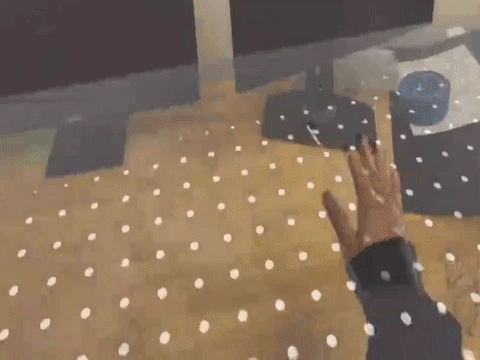
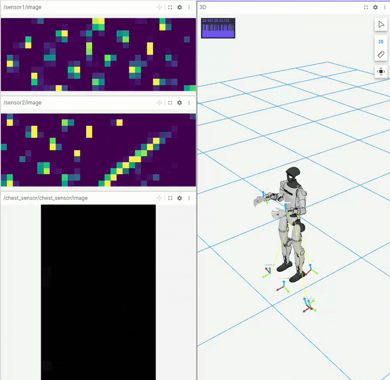

XR-robot data collection (Unity)We use VR/XR devices to collect demonstration data in a virtual and a real system. An immersive interface enables natural human-robot interaction through hand tracking and mapping user motions to a robotic arm. We incorporate feedback from the robot controller modules to collect a more safe dataset for skill learning.   XR interaction, VR capture, and simulationUnity environment development — VR environment (Meta Quest). Left Top: First-person view inside a synthetic scene (e.g., a warehouse with a conveyor), with a translucent virtual hand reaching and interacting with objects—typical of collecting egocentric demonstrations in VR. Left Bottom: A mixed-reality view where a digital manipulator is registered to the real desk; joint labels (elbow, wrist, gripper) float in space so operators see both the physical setup and the commanded kinematic chain. Middle: A Unity build running on iPhone: on-screen sliders bridge touch UI for interactive monitoring of the robot. VR Data collection (Pico 4U). Right: Pico 4U controller input is converted to IK targets for the G1 humanoid and used for collecting the humanoid dataset. Additionally, tactile sensing is incorporated as a modality and fed into a tactile-policy. Stacked sensor panels show heatmap-style tactile or proximity maps and a chest-mounted camera stream, so contact and body state are logged alongside motion. The session can be reviewed as both raw sensing and full-body IK control diagnostics, visualized in a 3D viewport with the G1 model on a grid, RGB axes at joints, and constraint lines linking IK targets. |